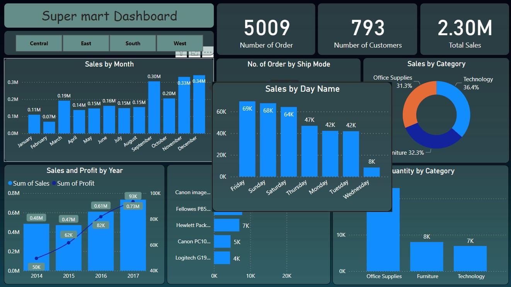

It displays various sales and profit metrics for a fictional company, Super Mart. While Power BI itself doesn’t use Excel formulas directly, it uses a similar formula language called DAX (Data Analysis Expressions) to create calculated columns and measures.
Here’s a breakdown of the different sections of the dashboard and the kind of DAX formulas that could be used to create them:
Sales by Month
This is a line chart that shows the total sales per month throughout the year. A DAX formula would be used to calculate the total sales for each month. This would likely involve summing the sales amount for each transaction record where the transaction date falls within the specified month.
Number of Orders by Ship Mode
This is a pie chart that shows the number of orders shipped by each shipping method (First Class, Same Day, Standard Class). A DAX formula would be used to calculate the count of orders for each ship mode. This would likely involve filtering the data for each ship mode and then using the COUNTROWS function to count the number of records in the filtered table.
Sales by Category
This section breaks down total sales into two parts: a stacked bar chart that shows sales by category (Office Supplies, Technology, Furniture) for each month, and a donut chart that shows the percentage of total sales for each category.
The stacked bar chart would likely use a combination of DAX formulas to calculate sales by category and month. One formula would be used to filter the data for each category and month. Another formula would be used to sum the sales amount for the filtered data.
The donut chart would use a DAX formula to calculate the total sales for each category. This would likely involve summing the sales amount for each transaction record where the product category matches the specified category. Then another formula would be used to calculate the percentage of total sales for each category by dividing the category sales total by the grand total sales and formatting the result as a percentage.
Sales and Profit by Year
This section displays a line chart showing the sum of sales and sum of profit for each year. DAX formulas would be used to calculate the total sales and total profit for each year. This would likely involve filtering the data for each year and then using the SUMX function to sum the sales amount and profit amount for the filtered data.
Profit by Top Product
This section shows a bar chart that displays the profit earned from each of the top profit-generating products. A DAX formula would be used to calculate the profit for each product. This would likely involve subtracting the cost of goods sold from the sales amount for each transaction record, and then summing the profit amount for each product. The products would then be sorted by profit, showing the top products.
Quantity by Category
This section displays a bar chart showing the total quantity sold for each product category. A DAX formula would be used to calculate the total quantity sold for each category. This would likely involve summing the quantity sold for each transaction record where the product category matches the specified category.
It’s important to note that these are just examples of how DAX formulas could be used to create the visuals in this dashboard. The specific formulas would depend on the structure of the underlying data in Power BI.

Dashboard View